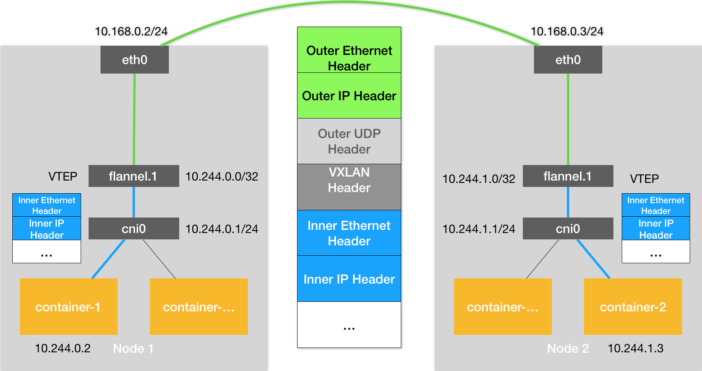

- 00 开篇词 打通“容器技术”的任督二脉.md.html
- 01 预习篇 · 小鲸鱼大事记（一）：初出茅庐.md.html
- 02 预习篇 · 小鲸鱼大事记（二）：崭露头角.md.html
- 03 预习篇 · 小鲸鱼大事记（三）：群雄并起.md.html
- 04 预习篇 · 小鲸鱼大事记（四）：尘埃落定.md.html
- 05 白话容器基础（一）：从进程说开去.md.html
- 06 白话容器基础（二）：隔离与限制.md.html
- 07 白话容器基础（三）：深入理解容器镜像.md.html
- 08 白话容器基础（四）：重新认识Docker容器.md.html
- 09 从容器到容器云：谈谈Kubernetes的本质.md.html
- 10 Kubernetes一键部署利器：kubeadm.md.html
- 11 从0到1：搭建一个完整的Kubernetes集群.md.html
- 12 牛刀小试：我的第一个容器化应用.md.html
- 13 为什么我们需要Pod？.md.html
- 14 深入解析Pod对象（一）：基本概念.md.html
- 15 深入解析Pod对象（二）：使用进阶.md.html
- 16 编排其实很简单：谈谈“控制器”模型.md.html
- 17 经典PaaS的记忆：作业副本与水平扩展.md.html
- 18 深入理解StatefulSet（一）：拓扑状态.md.html
- 19 深入理解StatefulSet（二）：存储状态.md.html
- 20 深入理解StatefulSet（三）：有状态应用实践.md.html
- 21 容器化守护进程的意义：DaemonSet.md.html
- 22 撬动离线业务：Job与CronJob.md.html
- 23 声明式API与Kubernetes编程范式.md.html
- 24 深入解析声明式API（一）：API对象的奥秘.md.html
- 25 深入解析声明式API（二）：编写自定义控制器.md.html
- 26 基于角色的权限控制：RBAC.md.html
- 27 聪明的微创新：Operator工作原理解读.md.html
- 28 PV、PVC、StorageClass，这些到底在说啥？.md.html
- 29 PV、PVC体系是不是多此一举？从本地持久化卷谈起.md.html
- 30 编写自己的存储插件：FlexVolume与CSI.md.html
- 31 容器存储实践：CSI插件编写指南.md.html
- 32 浅谈容器网络.md.html
- 33 深入解析容器跨主机网络.md.html
- 34 Kubernetes网络模型与CNI网络插件.md.html
- 35 解读Kubernetes三层网络方案.md.html
- 36 为什么说Kubernetes只有soft multi-tenancy？.md.html
- 37 找到容器不容易：Service、DNS与服务发现.md.html
- 38 从外界连通Service与Service调试“三板斧”.md.html
- 39 谈谈Service与Ingress.md.html
- 40 Kubernetes的资源模型与资源管理.md.html
- 41 十字路口上的Kubernetes默认调度器.md.html
- 42 Kubernetes默认调度器调度策略解析.md.html
- 43 Kubernetes默认调度器的优先级与抢占机制.md.html
- 44 Kubernetes GPU管理与Device Plugin机制.md.html
- 45 幕后英雄：SIG-Node与CRI.md.html
- 46 解读 CRI 与 容器运行时.md.html
- 47 绝不仅仅是安全：Kata Containers 与 gVisor.md.html
- 48 Prometheus、Metrics Server与Kubernetes监控体系.md.html
- 49 Custom Metrics_ 让Auto Scaling不再“食之无味”.md.html
- 50 让日志无处可逃：容器日志收集与管理.md.html
- 51 谈谈Kubernetes开源社区和未来走向.md.html
- 52 答疑：在问题中解决问题，在思考中产生思考.md.html
- 特别放送 2019 年，容器技术生态会发生些什么？.md.html
- 特别放送 基于 Kubernetes 的云原生应用管理，到底应该怎么做？.md.html
- 结束语 Kubernetes：赢开发者赢天下.md.html
- 捐赠
34 Kubernetes网络模型与CNI网络插件
你好，我是张磊。今天我和你分享的主题是：Kubernetes网络模型与CNI网络插件。
在上一篇文章中，我以Flannel项目为例，为你详细讲解了容器跨主机网络的两种实现方法：UDP和VXLAN。
不难看到，这些例子有一个共性，那就是用户的容器都连接在docker0网桥上。而网络插件则在宿主机上创建了一个特殊的设备（UDP模式创建的是TUN设备，VXLAN模式创建的则是VTEP设备），docker0与这个设备之间，通过IP转发（路由表）进行协作。
然后，网络插件真正要做的事情，则是通过某种方法，把不同宿主机上的特殊设备连通，从而达到容器跨主机通信的目的。
实际上，上面这个流程，也正是Kubernetes对容器网络的主要处理方法。只不过，Kubernetes是通过一个叫作CNI的接口，维护了一个单独的网桥来代替docker0。这个网桥的名字就叫作：CNI网桥，它在宿主机上的设备名称默认是：cni0。
以Flannel的VXLAN模式为例，在Kubernetes环境里，它的工作方式跟我们在上一篇文章中讲解的没有任何不同。只不过，docker0网桥被替换成了CNI网桥而已，如下所示：

在这里，Kubernetes为Flannel分配的子网范围是10.244.0.0/16。这个参数可以在部署的时候指定，比如：
$ kubeadm init --pod-network-cidr=10.244.0.0/16
也可以在部署完成后，通过修改kube-controller-manager的配置文件来指定。
这时候，假设Infra-container-1要访问Infra-container-2（也就是Pod-1要访问Pod-2），这个IP包的源地址就是10.244.0.2，目的IP地址是10.244.1.3。而此时，Infra-container-1里的eth0设备，同样是以Veth Pair的方式连接在Node 1的cni0网桥上。所以这个IP包就会经过cni0网桥出现在宿主机上。
此时，Node 1上的路由表，如下所示：
# 在Node 1上
$ route -n
Kernel IP routing table
Destination Gateway Genmask Flags Metric Ref Use Iface
...
10.244.0.0 0.0.0.0 255.255.255.0 U 0 0 0 cni0
10.244.1.0 10.244.1.0 255.255.255.0 UG 0 0 0 flannel.1
172.17.0.0 0.0.0.0 255.255.0.0 U 0 0 0 docker0
因为我们的IP包的目的IP地址是10.244.1.3，所以它只能匹配到第二条规则，也就是10.244.1.0对应的这条路由规则。
可以看到，这条规则指定了本机的flannel.1设备进行处理。并且，flannel.1在处理完后，要将IP包转发到的网关（Gateway），正是“隧道”另一端的VTEP设备，也就是Node 2的flannel.1设备。所以，接下来的流程，就跟上一篇文章中介绍过的Flannel VXLAN模式完全一样了。
需要注意的是，CNI网桥只是接管所有CNI插件负责的、即Kubernetes创建的容器（Pod）。而此时，如果你用docker run单独启动一个容器，那么Docker项目还是会把这个容器连接到docker0网桥上。所以这个容器的IP地址，一定是属于docker0网桥的172.17.0.0/16网段。
Kubernetes之所以要设置这样一个与docker0网桥功能几乎一样的CNI网桥，主要原因包括两个方面：
- 一方面，Kubernetes项目并没有使用Docker的网络模型（CNM），所以它并不希望、也不具备配置docker0网桥的能力；
- 另一方面，这还与Kubernetes如何配置Pod，也就是Infra容器的Network Namespace密切相关。
我们知道，Kubernetes创建一个Pod的第一步，就是创建并启动一个Infra容器，用来“hold”住这个Pod的Network Namespace（这里，你可以再回顾一下专栏第13篇文章《为什么我们需要Pod？》中的相关内容）。
所以，CNI的设计思想，就是：Kubernetes在启动Infra容器之后，就可以直接调用CNI网络插件，为这个Infra容器的Network Namespace，配置符合预期的网络栈。
备注：在前面第32篇文章《浅谈容器网络》中，我讲解单机容器网络时，已经和你分享过，一个Network Namespace的网络栈包括：网卡（Network Interface）、回环设备（Loopback Device）、路由表（Routing Table）和iptables规则。
那么，这个网络栈的配置工作又是如何完成的呢？
为了回答这个问题，我们就需要从CNI插件的部署和实现方式谈起了。
我们在部署Kubernetes的时候，有一个步骤是安装kubernetes-cni包，它的目的就是在宿主机上安装CNI插件所需的基础可执行文件。
在安装完成后，你可以在宿主机的/opt/cni/bin目录下看到它们，如下所示：
$ ls -al /opt/cni/bin/
total 73088
-rwxr-xr-x 1 root root 3890407 Aug 17 2017 bridge
-rwxr-xr-x 1 root root 9921982 Aug 17 2017 dhcp
-rwxr-xr-x 1 root root 2814104 Aug 17 2017 flannel
-rwxr-xr-x 1 root root 2991965 Aug 17 2017 host-local
-rwxr-xr-x 1 root root 3475802 Aug 17 2017 ipvlan
-rwxr-xr-x 1 root root 3026388 Aug 17 2017 loopback
-rwxr-xr-x 1 root root 3520724 Aug 17 2017 macvlan
-rwxr-xr-x 1 root root 3470464 Aug 17 2017 portmap
-rwxr-xr-x 1 root root 3877986 Aug 17 2017 ptp
-rwxr-xr-x 1 root root 2605279 Aug 17 2017 sample
-rwxr-xr-x 1 root root 2808402 Aug 17 2017 tuning
-rwxr-xr-x 1 root root 3475750 Aug 17 2017 vlan
这些CNI的基础可执行文件，按照功能可以分为三类：
第一类，叫作Main插件，它是用来创建具体网络设备的二进制文件。比如，bridge（网桥设备）、ipvlan、loopback（lo设备）、macvlan、ptp（Veth Pair设备），以及vlan。
我在前面提到过的Flannel、Weave等项目，都属于“网桥”类型的CNI插件。所以在具体的实现中，它们往往会调用bridge这个二进制文件。这个流程，我马上就会详细介绍到。
第二类，叫作IPAM（IP Address Management）插件，它是负责分配IP地址的二进制文件。比如，dhcp，这个文件会向DHCP服务器发起请求；host-local，则会使用预先配置的IP地址段来进行分配。
第三类，是由CNI社区维护的内置CNI插件。比如：flannel，就是专门为Flannel项目提供的CNI插件；tuning，是一个通过sysctl调整网络设备参数的二进制文件；portmap，是一个通过iptables配置端口映射的二进制文件；bandwidth，是一个使用Token Bucket Filter (TBF) 来进行限流的二进制文件。
从这些二进制文件中，我们可以看到，如果要实现一个给Kubernetes用的容器网络方案，其实需要做两部分工作，以Flannel项目为例：
首先，实现这个网络方案本身。这一部分需要编写的，其实就是flanneld进程里的主要逻辑。比如，创建和配置flannel.1设备、配置宿主机路由、配置ARP和FDB表里的信息等等。
然后，实现该网络方案对应的CNI插件。这一部分主要需要做的，就是配置Infra容器里面的网络栈，并把它连接在CNI网桥上。
由于Flannel项目对应的CNI插件已经被内置了，所以它无需再单独安装。而对于Weave、Calico等其他项目来说，我们就必须在安装插件的时候，把对应的CNI插件的可执行文件放在/opt/cni/bin/目录下。
实际上，对于Weave、Calico这样的网络方案来说，它们的DaemonSet只需要挂载宿主机的/opt/cni/bin/，就可以实现插件可执行文件的安装了。你可以想一下具体应该怎么做，就当作一个课后小问题留给你去实践了。
接下来，你就需要在宿主机上安装flanneld（网络方案本身）。而在这个过程中，flanneld启动后会在每台宿主机上生成它对应的CNI配置文件（它其实是一个ConfigMap），从而告诉Kubernetes，这个集群要使用Flannel作为容器网络方案。
这个CNI配置文件的内容如下所示：
$ cat /etc/cni/net.d/10-flannel.conflist
{
"name": "cbr0",
"plugins": [
{
"type": "flannel",
"delegate": {
"hairpinMode": true,
"isDefaultGateway": true
}
},
{
"type": "portmap",
"capabilities": {
"portMappings": true
}
}
]
}
需要注意的是，在Kubernetes中，处理容器网络相关的逻辑并不会在kubelet主干代码里执行，而是会在具体的CRI（Container Runtime Interface，容器运行时接口）实现里完成。对于Docker项目来说，它的CRI实现叫作dockershim，你可以在kubelet的代码里找到它。
所以，接下来dockershim会加载上述的CNI配置文件。
需要注意，Kubernetes目前不支持多个CNI插件混用。如果你在CNI配置目录（/etc/cni/net.d）里放置了多个CNI配置文件的话，dockershim只会加载按字母顺序排序的第一个插件。
但另一方面，CNI允许你在一个CNI配置文件里，通过plugins字段，定义多个插件进行协作。
比如，在我们上面这个例子里，Flannel项目就指定了flannel和portmap这两个插件。
这时候，dockershim会把这个CNI配置文件加载起来，并且把列表里的第一个插件、也就是flannel插件，设置为默认插件。而在后面的执行过程中，flannel和portmap插件会按照定义顺序被调用，从而依次完成“配置容器网络”和“配置端口映射”这两步操作。
接下来，我就来为你讲解一下这样一个CNI插件的工作原理。
当kubelet组件需要创建Pod的时候，它第一个创建的一定是Infra容器。所以在这一步，dockershim就会先调用Docker API创建并启动Infra容器，紧接着执行一个叫作SetUpPod的方法。这个方法的作用就是：为CNI插件准备参数，然后调用CNI插件为Infra容器配置网络。
这里要调用的CNI插件，就是/opt/cni/bin/flannel；而调用它所需要的参数，分为两部分。
第一部分，是由dockershim设置的一组CNI环境变量。
其中，最重要的环境变量参数叫作：CNI_COMMAND。它的取值只有两种：ADD和DEL。
这个ADD和DEL操作，就是CNI插件唯一需要实现的两个方法。
其中ADD操作的含义是：把容器添加到CNI网络里；DEL操作的含义则是：把容器从CNI网络里移除掉。
而对于网桥类型的CNI插件来说，这两个操作意味着把容器以Veth Pair的方式“插”到CNI网桥上，或者从网桥上“拔”掉。
接下来，我以ADD操作为重点进行讲解。
CNI的ADD操作需要的参数包括：容器里网卡的名字eth0（CNI_IFNAME）、Pod的Network Namespace文件的路径（CNI_NETNS）、容器的ID（CNI_CONTAINERID）等。这些参数都属于上述环境变量里的内容。其中，Pod（Infra容器）的Network Namespace文件的路径，我在前面讲解容器基础的时候提到过，即：/proc/<容器进程的PID>/ns/net。
备注：这里你也可以再回顾下专栏第8篇文章《白话容器基础（四）：重新认识Docker容器》中的相关内容。
除此之外，在 CNI 环境变量里，还有一个叫作CNI_ARGS的参数。通过这个参数，CRI实现（比如dockershim）就可以以Key-Value的格式，传递自定义信息给网络插件。这是用户将来自定义CNI协议的一个重要方法。
第二部分，则是dockershim从CNI配置文件里加载到的、默认插件的配置信息。
这个配置信息在CNI中被叫作Network Configuration，它的完整定义你可以参考这个文档。dockershim会把Network Configuration以JSON数据的格式，通过标准输入（stdin）的方式传递给Flannel CNI插件。
而有了这两部分参数，Flannel CNI插件实现ADD操作的过程就非常简单了。
不过，需要注意的是，Flannel的CNI配置文件（ /etc/cni/net.d/10-flannel.conflist）里有这么一个字段，叫作delegate：
...
"delegate": {
"hairpinMode": true,
"isDefaultGateway": true
}
Delegate字段的意思是，这个CNI插件并不会自己做事儿，而是会调用Delegate指定的某种CNI内置插件来完成。对于Flannel来说，它调用的Delegate插件，就是前面介绍到的CNI bridge插件。
所以说，dockershim对Flannel CNI插件的调用，其实就是走了个过场。Flannel CNI插件唯一需要做的，就是对dockershim传来的Network Configuration进行补充。比如，将Delegate的Type字段设置为bridge，将Delegate的IPAM字段设置为host-local等。
经过Flannel CNI插件补充后的、完整的Delegate字段如下所示：
{
"hairpinMode":true,
"ipMasq":false,
"ipam":{
"routes":[
{
"dst":"10.244.0.0/16"
}
],
"subnet":"10.244.1.0/24",
"type":"host-local"
},
"isDefaultGateway":true,
"isGateway":true,
"mtu":1410,
"name":"cbr0",
"type":"bridge"
}
其中，ipam字段里的信息，比如10.244.1.0/24，读取自Flannel在宿主机上生成的Flannel配置文件，即：宿主机上的/run/flannel/subnet.env文件。
接下来，Flannel CNI插件就会调用CNI bridge插件，也就是执行：/opt/cni/bin/bridge二进制文件。
这一次，调用CNI bridge插件需要的两部分参数的第一部分、也就是CNI环境变量，并没有变化。所以，它里面的CNI_COMMAND参数的值还是“ADD”。
而第二部分Network Configration，正是上面补充好的Delegate字段。Flannel CNI插件会把Delegate字段的内容以标准输入（stdin）的方式传递给CNI bridge插件。
此外，Flannel CNI插件还会把Delegate字段以JSON文件的方式，保存在/var/lib/cni/flannel目录下。这是为了给后面删除容器调用DEL操作时使用的。
有了这两部分参数，接下来CNI bridge插件就可以“代表”Flannel，进行“将容器加入到CNI网络里”这一步操作了。而这一部分内容，与容器Network Namespace密切相关，所以我要为你详细讲解一下。
首先，CNI bridge插件会在宿主机上检查CNI网桥是否存在。如果没有的话，那就创建它。这相当于在宿主机上执行：
# 在宿主机上
$ ip link add cni0 type bridge
$ ip link set cni0 up
接下来，CNI bridge插件会通过Infra容器的Network Namespace文件，进入到这个Network Namespace里面，然后创建一对Veth Pair设备。
紧接着，它会把这个Veth Pair的其中一端，“移动”到宿主机上。这相当于在容器里执行如下所示的命令：
#在容器里
# 创建一对Veth Pair设备。其中一个叫作eth0，另一个叫作vethb4963f3
$ ip link add eth0 type veth peer name vethb4963f3
# 启动eth0设备
$ ip link set eth0 up
# 将Veth Pair设备的另一端（也就是vethb4963f3设备）放到宿主机（也就是Host Namespace）里
$ ip link set vethb4963f3 netns $HOST_NS
# 通过Host Namespace，启动宿主机上的vethb4963f3设备
$ ip netns exec $HOST_NS ip link set vethb4963f3 up
这样，vethb4963f3就出现在了宿主机上，而且这个Veth Pair设备的另一端，就是容器里面的eth0。
当然，你可能已经想到，上述创建Veth Pair设备的操作，其实也可以先在宿主机上执行，然后再把该设备的一端放到容器的Network Namespace里，这个原理是一样的。
不过，CNI插件之所以要“反着”来，是因为CNI里对Namespace操作函数的设计就是如此，如下所示：
err := containerNS.Do(func(hostNS ns.NetNS) error {
...
return nil
})
这个设计其实很容易理解。在编程时，容器的Namespace是可以直接通过Namespace文件拿到的；而Host Namespace，则是一个隐含在上下文的参数。所以，像上面这样，先通过容器Namespace进入容器里面，然后再反向操作Host Namespace，对于编程来说要更加方便。
接下来，CNI bridge插件就可以把vethb4963f3设备连接在CNI网桥上。这相当于在宿主机上执行：
# 在宿主机上
$ ip link set vethb4963f3 master cni0
在将vethb4963f3设备连接在CNI网桥之后，CNI bridge插件还会为它设置Hairpin Mode（发夹模式）。这是因为，在默认情况下，网桥设备是不允许一个数据包从一个端口进来后，再从这个端口发出去的。但是，它允许你为这个端口开启Hairpin Mode，从而取消这个限制。
这个特性，主要用在容器需要通过NAT（即：端口映射）的方式，“自己访问自己”的场景下。
举个例子，比如我们执行docker run -p 8080:80，就是在宿主机上通过iptables设置了一条DNAT（目的地址转换）转发规则。这条规则的作用是，当宿主机上的进程访问“<宿主机的IP地址>:8080”时，iptables会把该请求直接转发到“<容器的IP地址>:80”上。也就是说，这个请求最终会经过docker0网桥进入容器里面。
但如果你是在容器里面访问宿主机的8080端口，那么这个容器里发出的IP包会经过vethb4963f3设备（端口）和docker0网桥，来到宿主机上。此时，根据上述DNAT规则，这个IP包又需要回到docker0网桥，并且还是通过vethb4963f3端口进入到容器里。所以，这种情况下，我们就需要开启vethb4963f3端口的Hairpin Mode了。
所以说，Flannel插件要在CNI配置文件里声明hairpinMode=true。这样，将来这个集群里的Pod才可以通过它自己的Service访问到自己。
接下来，CNI bridge插件会调用CNI ipam插件，从ipam.subnet字段规定的网段里为容器分配一个可用的IP地址。然后，CNI bridge插件就会把这个IP地址添加在容器的eth0网卡上，同时为容器设置默认路由。这相当于在容器里执行：
# 在容器里
$ ip addr add 10.244.0.2/24 dev eth0
$ ip route add default via 10.244.0.1 dev eth0
最后，CNI bridge插件会为CNI网桥添加IP地址。这相当于在宿主机上执行：
# 在宿主机上
$ ip addr add 10.244.0.1/24 dev cni0
在执行完上述操作之后，CNI插件会把容器的IP地址等信息返回给dockershim，然后被kubelet添加到Pod的Status字段。
至此，CNI插件的ADD方法就宣告结束了。接下来的流程，就跟我们上一篇文章中容器跨主机通信的过程完全一致了。
需要注意的是，对于非网桥类型的CNI插件，上述“将容器添加到CNI网络”的操作流程，以及网络方案本身的工作原理，就都不太一样了。我将会在后续文章中，继续为你分析这部分内容。
总结
在本篇文章中，我为你详细讲解了Kubernetes中CNI网络的实现原理。根据这个原理，你其实就很容易理解所谓的“Kubernetes网络模型”了：
所有容器都可以直接使用IP地址与其他容器通信，而无需使用NAT。
所有宿主机都可以直接使用IP地址与所有容器通信，而无需使用NAT。反之亦然。
容器自己“看到”的自己的IP地址，和别人（宿主机或者容器）看到的地址是完全一样的。
可以看到，这个网络模型，其实可以用一个字总结，那就是“通”。
容器与容器之间要“通”，容器与宿主机之间也要“通”。并且，Kubernetes要求这个“通”，还必须是直接基于容器和宿主机的IP地址来进行的。
当然，考虑到不同用户之间的隔离性，在很多场合下，我们还要求容器之间的网络“不通”。这个问题，我会在后面的文章中会为你解决。
思考题
请你思考一下，为什么Kubernetes项目不自己实现容器网络，而是要通过 CNI 做一个如此简单的假设呢？
感谢你的收听，欢迎你给我留言，也欢迎分享给更多的朋友一起阅读。
© 2019 - 2023 Liangliang Lee. Powered by gin and hexo-theme-book.